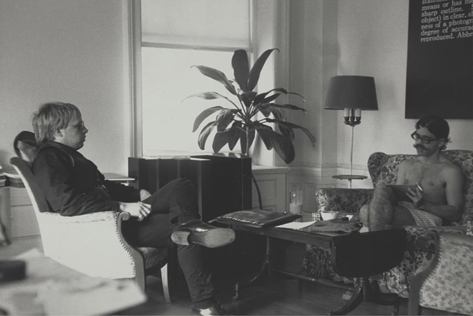

THIS WEBSITE DEALS WITH ART PUBLISHING AS POLITICAL PLATFORM
XEROX BOOK
This book exhibition—also known as The Xerox Book—was organized and
published by
Seth Siegelaub

in 1968. Both presenting a range of artists
associated with Siegelaub’s curatorial practice and utilizing unconventional
modes of exhibition, this book marks ongoing attempt by Siegelaub to show
work outside of the gallery setting, and his first time showing an exhibition
in book form. Furthermore, Siegelaub asked each artist in the exhibition to create
25 pages of work that responded to the photocopy format. Though the Xerox process
proved financially unfeasible—the works ultimately being reproduced through the
more conventional printing press—the book continued to be referred to as
“The Xerox Book,” preserving its association with the then-new photocopy technology.
Participating artists are Carl Andre, Robert Barry,
Douglas Huebler, Joseph Kosuth, Sol LeWitt, Robert Morris,
and Lawrence Weiner.